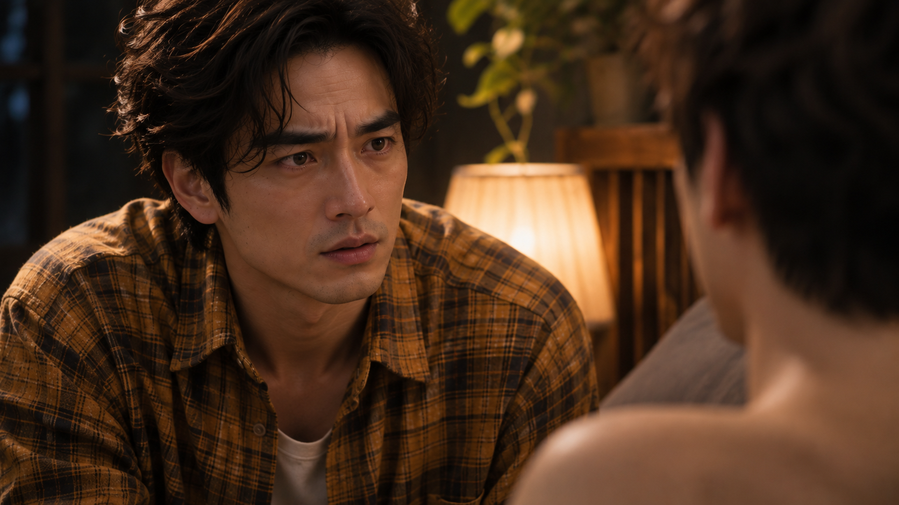
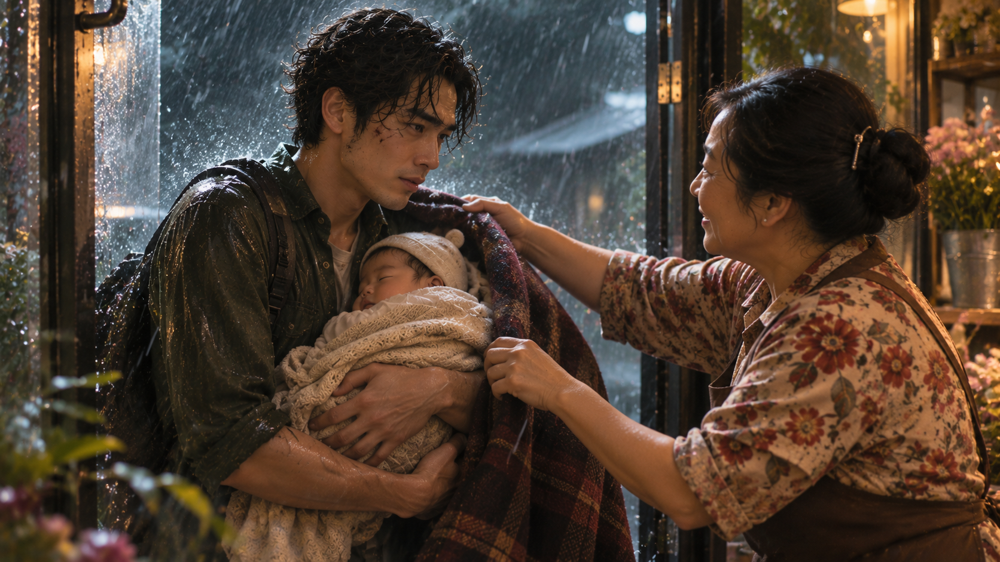
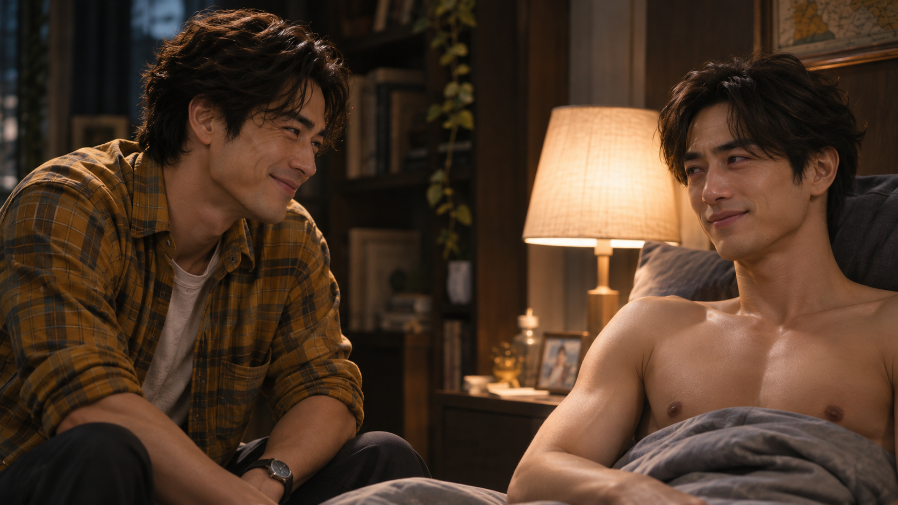
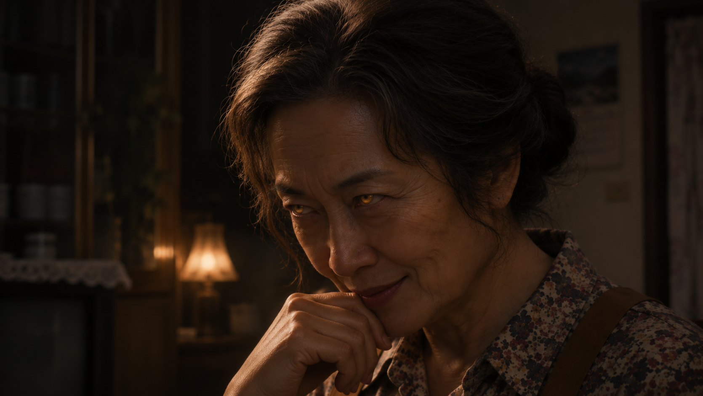

WHITE MAGIC ART STUDIO
第十五章
孕胎樹
桃園・比克花店
夜已深。
景皓的房間裡，只剩床頭那盞暖黃色的燈還亮著。
景毅靠坐在床頭，身上蓋著薄被，靜靜聽著哥哥說完十年前發生的一切。
「……那天發現媽的狀況後，沒過幾天，她就走了。」
景皓垂下眼。
「而我，也從那時候起，再也沒回過家。」
房間陷入沉默。
十年前的那場爭執，彷彿直到今天，仍有什麼東西卡在兄弟之間。
「狂魔症……」
景毅忽然低聲喃喃。
景皓抬起頭。
「……你說什麼？」
「媽是死於狂魔症。」
景皓怔住。

「你是說……最近在台灣聖術師教會鬧得沸沸揚揚的那個狂魔症？」
景毅點了點頭。
「十年前，我們根本不知道那是什麼。」
景毅低頭望著自己的雙手。
「那時候，我一接到消息，就立刻趕回台灣。等我知道媽的死因，才發現自己根本什麼都做不了。」
他苦笑。
「明明整天都在讀書、訓練，想著怎麼超越你、怎麼得到爸的認可……」
他握緊拳頭。
「結果連自己的媽媽都救不了。」
景皓望著弟弟。
想起十年前，他還只是個在宿舍裡埋頭苦讀書的人，
如今坐在面前的，已經是三十三歲的男人。
可說起母親時，那份無力感，似乎從未真正消失。
景皓沉默片刻。
「所以……這就是你後來又開始練聖術的原因？」
景毅沒有立刻回答。
他望著自己的掌心，像是在思考該怎麼解釋。
「一開始，我只是想查清楚狂魔症到底是什麼。」
「嗯。」
「後來查得越多，就越覺得自己知道得太少。所以我重新開始練聖術，想著如果能再強一點，也許就能多做些什麼。」
景毅停了一下。
「可是這十年下來，我才慢慢發現……」
他低下頭。
「說到底，我只是想補上心裡那個——」
「大洞。」
「大洞。」
兩人的聲音，幾乎同時響起。
景毅愣了一下。
景皓也怔住了。
兄弟倆抬起頭，望向彼此。
「……你也這麼覺得？」景毅問。
景皓沒有立刻回答。
過了片刻，他才輕輕點頭。
「嗯。」
景毅看著他。
景皓則望向窗外，嘴角帶著一點苦笑。
「媽走了以後，我一直覺得我整個人好像少了什麼。」
他停頓了一下。
「即使學醫這麼久，自認已經看淡生死，但還是總覺得一切都不一樣了。」
景毅垂下眼。
「……我也是。」
這一次，他沒有反駁哥哥。
景皓也沒有再說什麼。
兩人就這樣安靜了一會兒。
那是十年來，他們第一次發現，原來自己一直試圖填補的，是同一個地方。
過了一會兒，景皓才輕輕吐出一口氣。
「不過，說真的，我很佩服你。」
景毅皺眉。
「……佩服我什麼？」
「上週你弄出來的那堆植物，可把我搞得快瘋了。」
景皓無奈地笑了笑。
「你明明是術器使，卻能練到像爸那樣，憑空創造術之木。那可不是普通聖術師做得到的事。」
他看著弟弟。
「連我都辦不到。」
景毅沒有露出得意的表情。
只是低頭看著自己的手。
「……再怎麼厲害，也救不回媽。」
景皓的笑容淡了下來。
他沒有急著安慰弟弟。
因為那句話，他自己也曾經想過。
「而且，說起來還真諷刺。」
景毅忽然開口。
「什麼？」
「我花了十年練出來的聖術……」
他抿了抿嘴。
「打得最轟烈的一次，竟然是拿來對付你。」
景皓看著他。
「……對不起，我好像太超過了。」
那三個字說得很輕。
景毅微微偏過頭，沒有看哥哥。
明明已經三十三歲了，可面對這個被自己嫉妒了大半輩子的哥哥，他依然不太習慣坦白自己的心情。
景皓看了他一會兒。
沒有立刻回答。
只是伸手，輕輕拍了拍弟弟的肩膀。
「……我接受你的道歉。」
景毅低著頭。
這一次，他沒有把哥哥的手推開。
「況且……」
景皓收回手，望向地板。
「你哥做得比你還過火。」
景毅抬起頭。
「什麼意思？」
景皓停頓片刻。
「不只媽的過世，還有讓瑞雯未婚懷孕、想用聖術殺爸……」
他輕輕吐出一口氣。
「那時候，可以說是我人生最低潮的時候。」
床頭燈映著他疲憊的側臉。
「從小，大家都說我會成為木翼。」
「……」
「可是我連自己的家都弄成那個樣子。」
景皓扯了扯嘴角。
「你說，我還有心情繼續擔任『翼』嗎？」
景毅皺起眉。
他本來想說些什麼，最後卻只是低聲開口。
「……哥。」
景皓微微一怔。
他轉頭看向弟弟。
那聲稱呼來得很自然，景毅自己似乎也沒發現。
十年了。
從重逢到現在，景毅不是直呼他的名字，就是刻意避開稱呼。
景皓的嘴角，不自覺地輕輕揚了一下。
「……所以後來呢？」
景皓看了他一眼。
沒有特別提起那聲「哥」。
只是重新望向窗外。
「後來啊……」
他沉默了一會兒。
「有一天，我跑到一個誰也找不到的地方。」
「對著天空大喊，求拉比把『木翼』這個名份從我身上拿走。」
景毅怔住。
「……你向拉比祈求這種事？」
「嗯。」
「然後呢？」
景皓沉默了一下。
「祂真的來了。」
景毅猛地坐直。
「什麼？！」
景皓點點頭。
「雖然那不是我第一次見到祂……但那次，是我最後一次見祂。」
他抬起手，輕輕碰了碰自己的頭髮。
「祂走到我面前，什麼都沒說。」
「……」
「只是像這樣，輕輕摸了摸我的頭。」
景皓的目光逐漸失焦。
「下一秒，我感覺有什麼東西，慢慢從身體裡離開。」
他放下手。
「然後，我就失去意識了。」
景毅一時間說不出話。
「所以……」
他看著哥哥。
「你現在已經不是木翼了？」
景皓輕輕點頭。
「嗯。」
「你知道爸如果知道這件事，肯定會氣瘋吧！」
「哈哈……」
景皓笑了兩聲。
笑意卻沒有真正抵達眼底。
「當時我哪還管得了這些。」
他低下頭。
「我只知道，我不想再照著爸替我安排好的路走下去。」
窗外傳來細微的風聲。
「我想離開梁家，離開那些責任……」
景皓停了一下。
「可是，有一件事，我不能就這樣丟下。」
「……瑞雯？」
「是孩子。」
景皓的聲音變得很輕。
「至少，我得讓那孩子平安來到這個世界。」
「我回去找過瑞雯。」
景皓緩緩說著。
「我告訴她，我願意負責，也願意跟她一起想辦法。」
他停了一下。
「可是，她不想留下孩子。」
景毅皺眉。
為什麼？」
「她說，這會毀了她的前程。」
景皓低頭看著自己的手。
「那時候，我們都還沒畢業。她有自己的計畫，也有想做的事。」
「所以她……」
「嗯。」
景皓點頭。
「她決定終止懷孕。」
景毅沒有接話。
「我求過她。」
景皓低聲說。
「我跟她說，我可以自己照顧孩子，不需要她放棄原本的人生。」
他輕輕搖頭。
「可是她不願意。」
房間裡安靜了下來。
「最後……」
景皓的手指緩緩收緊。
「在她準備終止懷孕的那一天，我做了一件事。」
景毅看著他。
「……什麼事？」
景皓沉默了好一會兒。
「我用了聖術。」
「你對凡人使用聖術？」
「恩，把孩子從她體內轉移出來。」
景毅瞪大眼睛。
「……什麼？！」
「那時候，孩子還只是個像桃子一樣大的受精卵。」
景皓低聲說。
「我知道這件事聽起來有多荒唐。」
他望向弟弟。
「可是，我還是做了。瑞雯醒來後只是覺得她自然流產了....」
景毅怔怔地看著哥哥。
「哥，你……」
「我知道。」
景皓打斷了他。
「那不是一個能輕易做出的決定。」
他垂下眼。
「我只是……真的很想留下這個孩子。」
景毅沒有立刻回答。
過了一會兒，他才問：
「可是……那麼小的生命，你要怎麼讓他繼續長大？」
景皓抬起頭。
「這就要說到另一件事了。」
「……什麼？」
「孕胎樹。」
「孕胎樹？」
景毅重複了一遍。
「那是什麼？」
「一種禁術。」
景皓說。
「我當時去找了一位道士。據說，他以前曾經是魔君。」
景毅的表情瞬間變了。
「你去找魔君？！」
「曾經是。」
景皓糾正。
「而且，我那時候也沒有別的辦法。」
景毅張了張嘴。
最後只是無奈地看著哥哥。
「……你真的什麼人都敢找。」
景皓苦笑。
「他告訴我，有一種很古老的禁術，能夠以樹木作為孕育生命的媒介。」
「樹木？」
「嗯。」
景皓點頭。
「銀杏樹。」
他看向自己的掌心。
「那種術法，能讓尚未成形的生命，在銀杏樹的庇護下繼續成長。」
「可是……」
景毅皺起眉。
「爸說過，使用『禁術』都得付出代價。」
「沒錯。」
景皓看著他。
「施術者必須以自己的生命力，維持孕胎樹的運作。」
景皓的聲音很平靜。
「道士說，那是一種以命換命的禁術。」
「……」
「而且成功率，只有千分之一。」
景毅愣住。
「千分之一？！」
景皓點點頭。
「他說，過去幾乎沒有人能成功。」
他停頓片刻。
「但我還是決定試試看。」
景毅難以置信地望著他。
「哥……你那時候到底在想什麼？」
景皓沒有立刻回答。
窗外的夜色，映在他眼中。
「我只知道……」
他低聲說。
「我不想再失去任何一個家人了。」
他說完，自己也安靜了下來。
那時候的他，並沒有想得那麼清楚。
母親走後，梁家的一切彷彿都變了樣。原本熟悉的地方，再也沒有一個角落能讓他安心待著。
而那個尚未出生的孩子，成了他唯一還能伸手抓住的事。
至少這一次，他想試著做點什麼。
「後來，我找到一片沒有人會經過的森林。」
景皓繼續說。
「那裡有一棵銀杏樹。」
他望著自己的雙手。
「我用聖術，將孩子的生命與那棵樹連結，再把自己的力量交給它。」
景毅靜靜聽著。
「接下來的七天，我一直守在那裡。」
景皓的聲音慢慢放輕。
「每天，我都能感覺到自己的力量不斷被孕胎樹吸收。」
「……」
「我不知道最後會怎麼樣。」
他苦笑。
「甚至不知道，自己能不能親眼看到孩子出生。」
景毅低下頭。
「你真的是……」
他咬了咬牙。
「……你他媽真的瘋了。」
景皓沒有反駁。
只是笑了笑。
「可能吧。」
他望向窗外。
「那七天很漫長。」
「……」
「森林裡很安靜，安靜到我只能聽見風吹過樹葉的聲音。」
景皓閉上眼睛。
「我一直等。」
「等什麼？」
「等一個答案。」
他停頓片刻。
「直到第七天……」
景皓的嘴角，終於浮現一絲真正的笑意。
「我聽見了一聲哭聲。」
景毅抬起頭。
「……哭聲？」
「嗯。」
景皓點點頭。
「嬰兒的哭聲。」
他望向弟弟。
「我睜開眼睛，發現銀杏樹的樹幹中央，竟然出現了一個樹洞。」
「……」
「而那個孩子，就安安靜靜地躺在裡面。」
景皓的聲音微微顫抖。
「他真的活下來了。」
景毅望著哥哥。
過了好一會兒，才輕輕說：
「……昱鎧。」
景皓點頭。
「嗯。」
他眼眶微微泛紅。
「我的昱鎧。」
「後來，我就帶著昱鎧開始生活了。」
景皓靠向椅背。
「不過，真正開始養孩子之後，我才知道事情根本沒有想像中簡單。」
景毅看著他。
「你不是一直都很會安排事情嗎？」
「安排是一回事，真的做又是另一回事啊。」
景皓無奈地笑了。
「光是奶粉、尿布、生活費，就夠我頭痛了。更不用說那時候我們還住在美國。」
「所以你才回台灣？」
「嗯。」
景皓點點頭。
「至少在台灣，生活開銷比較能負擔。」
他望向房門。
「也是運氣好，後來遇到了碧雲姐。」
「樓下那位？」
「對。」
景皓笑了笑。
「她是這間花店的老闆娘。」
「一開始，我只是想找份工作，讓自己有辦法照顧昱鎧。」

他輕輕搖頭。
「沒想到，她不只願意收留我們，還讓我在花店幫忙。」
景毅若有所思地點頭。
「難怪你會待在這裡。」
「嗯。」
景皓看向窗外。
「一待，就這麼多年了。」
「對了。」
景毅忽然想起什麼。
「昱鎧知道自己的身世嗎？」
景皓搖頭。
「還不知道。」
「完全不知道？」
「至少……還不知道他是怎麼來到這個世界的。」
景皓笑了笑。
「不過，上週他的木瞳覺醒了。」
「什麼？！」
景毅猛地抬頭。
「十歲就覺醒了？」
「嗯。」
「那你有跟他說我們家的事？」
「說了。」
景皓點點頭。
「也就是上週，我才第一次告訴他，我們家是聖術師家族。」
景毅愣了一下。
「……你也瞞得太久了吧。」
「我知道啦。」
景皓有些不好意思地摸了摸後腦勺。
「可是他一開始根本不相信。」
「為什麼？」
「他以為我在唬他啊。」
景皓忍不住笑了。
「還問我，我們家該不會跟《火影忍者》一樣吧？」
景毅愣住。
隨即噗哧一聲笑了出來。
「所以他覺得我們是宇智波一族？」
「什麼啦？」
景皓笑出聲音，
「畢竟我們家也有異常的眼睛嘛。」
景皓笑得更大聲。
「你也太中二了吧！」
「明明是你兒子先講的！」
兩兄弟相視而笑。
那笑聲不算特別大。
卻讓原本沉重的房間，終於多了一點久違的溫度。

景毅望著哥哥。
有那麼一瞬間，他彷彿又看見了很久以前，那個總會笑著替自己收拾麻煩的哥哥。
只是這一次，他沒有再急著把那份親近推開。
笑聲漸漸停下。
景毅靠回枕頭，沉默了一會兒。
「……哥。」
「嗯？」
「那你呢？」
景皓看向他。
「什麼？」
「這麼多年……」
景毅停頓片刻。
「你有想過，帶昱鎧回去看看嗎？」
景皓的笑容慢慢收起。
房間再次安靜下來。
「……我不知道。」
他低聲說。
景毅沒有催促。
景皓望著窗外。
「自從有了昱鎧之後，我對爸過去對我做過的那些事...好像沒那麼執著了。」
他想了想。
「有時候，我甚至能理解他為什麼會那樣要求我。」
景毅靜靜聽著。
「可是……」
景皓低下頭。
「我還是不知道，回去是不是對的選擇。」
景毅沉默了片刻。
「爸其實很想你。」
景皓微微一怔。
「……是嗎？」
「嗯。」
景毅望向另一邊。
「雖然這讓我很不爽，但那是事實。」
景皓看著弟弟。
他注意到景毅說這句話時，眼神裡閃過的那份不甘。
那份情緒，他並不陌生。
「欸，景毅。」
「幹嘛？」
「我知道你一直很在乎爸怎麼看你。」
景毅皺眉。
「……突然講這個幹嘛？」
「可是你想想。」
景皓看著他。
「爸願意把那間經營了半輩子的醫院交給你，不就代表，他早就認同你了嗎？」
「他把醫院交給你，不是因為我不在。」
「是因為他相信你有能力做好。」
景毅沒有回答。
他低頭看著棉被。
許久，才輕輕嘆了口氣。
「……也許吧。」
他停了一下。
「也許我們從來都不知道，該怎麼當個『合格』的好兒子。」
景皓望著他。
忽然笑了。
「那不如……」
景毅抬起頭。
「先學著怎麼當個合格的『兄弟』？」
景毅愣住。
他望著哥哥伸過來的手。
過了好一會兒，才輕輕點頭。
「……嗯。」
「我們等等也打給景瑜吧。」
沒有更多的話。
也沒有誰再提起十年前的爭執。
只是那份原本緊繃的距離，似乎終於開始鬆動。
對景毅而言，他曾經以為，只有得到父親的認可，自己才能真正找到在梁家的位置。
可此刻，他忽然覺得——
也許那個自己一直渴望的家，並沒有想像中那麼遙遠。
門外
房間裡，兄弟倆的談話漸漸平息。
誰也沒有注意到——
門外的走廊上，正站著一個人。
碧雲。
她微微彎著腰，將耳朵貼在房門上。
從剛才開始，裡面的對話，她幾乎一字不漏地聽了進去。
可奇怪的是……
她並沒有露出平常那種擔心、好奇，或忍不住想插嘴的表情。
反而安靜得有些異常。
走廊昏暗的燈光，落在她的側臉上。
她慢慢抬起頭。
那雙眼睛裡，原本熟悉的神色，似乎消失了。
取而代之的——
是一抹枯葉般的褐黃色。
嘴角，也緩緩勾起一絲不尋常的笑意。
她望著緊閉的房門。
沒有敲門。
也沒有出聲。
只是靜靜站在那裡。
彷彿終於聽見了自己一直想知道的答案。
……她真的是張碧雲嗎？
